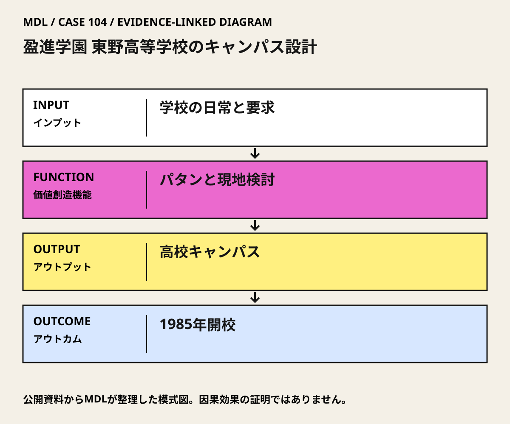

I / INPUT
何を持ち込んでいるか。
活動の出発点となる資源と課題を分けて整理します。「自社」は、その場・制度を運営する組織を指します。
II / VALUE CREATION FUNCTIONS
資源を、どう価値へ変えるか。
以下は既存の8ステップへの編集上の対応づけです。各取り組みの公式な工程名や、全工程を自前で担うことを意味しません。
III / OUTPUT
直接、何が生まれたか。
試作品、データ、契約、標準、育成した人材など、活動から直接生まれたもの。
110の固有パタンとキャンパスの設計。パタン報告は144ページの書誌記録。
公開資料で確認出典 1高校部分の校舎・屋外空間。
IV / OUTCOME
その結果、何が変わったか。
実際の利用、行動、業務、事業、地域の変化。報告された変化と、当該活動に帰属できる効果は区別します。
東野高等学校は1985年に開校。教育の場としての実現は確認できる。
公開資料で確認出典 1学習成績・幸福度・維持費への因果的改善は本版では未確認。
公開資料では未確認
PROJECT IN FOCUS / 具体的な事例
盈進学園 東野高等学校のキャンパス設計
確認できた段階：利用者参加による学校キャンパスの設計・建設 調査確認日 2026-10-06
誰の課題を、どう扱ったか
生まれたもの
110の固有パタンとキャンパスの設計。パタン報告は144ページの書誌記録。
確認できた変化
東野高等学校は1985年に開校。教育の場としての実現は確認できる。
評価の限界：CESの記録は当事者資料で、利用者参加の独立評価ではない。設計された35棟すべて、あるいは大学部を含む全体が完成したとはしない。歴史的な設計の成功と現在の学習成果・アクセス性能も別である。
DESIGN BACKWARDS FROM IMPLEMENTATION
社会実装から逆算して、
何を先に整えているか。
実証の先にある導入・運用・継続から、この事例の設計を読み解きます。原典で確認できる仕組みと、MDLの設計解釈・他地域へ応用するための提案を区別して読んでください。「提案」「未実施」と記す内容は、当地で実施済みの工夫ではありません。仕組みの存在と、全案件で成果が出たことも別に扱います。
MORE DETAIL / 運営・根拠・応用
運営の全体像と、学びを深める資料。
費用負担、公表値、応用条件、写真・動画、原典を続けて確認できます。
01どう動かしているのか。
利用者の望む生活をプロジェクト固有のパタンにまとめ、敷地上の配置と模型を往復して検討。その後に建物・構造・施工図へ進め、言葉による合意と実寸の体験を接続した。
意思決定と本人の関与：学校側が参加を設計の条件に求め、利用者とCESが配置等を検討した。最終予算・法的責任・参加者の拒否権がすべて対等だったことまでは公開資料で確認できない。 Christopher AlexanderはChief Architect。Hans-Joachim NeisらCES共同チームと学校利用者が関与し、施工はFujita Corporation。
- 生活上の要求を共有言語へする
- 敷地と模型で配置を確かめる
- 実施部分を学校運営へ渡す
02誰が負担し、誰が担うか。
学校が発注者であることは確認。建設・設計費の調達先、総額、現在の維持費は未確認。
制度やプログラムの財源と、各参加企業・地域に発生する費用は同じではありません。公開範囲を超える案件別予算・契約条件は未確認です。
03確認できたこと。
110の固有パタンとキャンパスの設計。パタン報告は144ページの書誌記録。
読み取れる範囲：CESの記録は当事者資料で、利用者参加の独立評価ではない。設計された35棟すべて、あるいは大学部を含む全体が完成したとはしない。歴史的な設計の成功と現在の学習成果・アクセス性能も別である。
原典で確かめる ↗ 出典の説明 ↓04日本で活かすなら。
パタンという名称を導入するより、利用者が決められる範囲、設計者が引き受ける責任、実寸で確かめる機会を明確にする。改修後にもパタンを更新する。
05そのまま真似できないこと。
CESの記録は当事者資料で、利用者参加の独立評価ではない。設計された35棟すべて、あるいは大学部を含む全体が完成したとはしない。歴史的な設計の成功と現在の学習成果・アクセス性能も別である。
06次に、何を確かめるか。
提案・未実施：提案・未実施：一つの学校または公共施設の共用部で、現状維持・家具配置の変更・小規模改修を比較する。利用者と3つのパタンを作り、許可を得て原寸モックアップを試す。
担い手：施設管理者が安全・予算の責任を持ち、利用者代表と設計者が変更案と採否理由を記録する。
測るもの：使いやすさ、滞在と通行、清掃時間、未参加者の困難、提案の採用・不採用理由を確認。
継続：異なる利用者に使いやすく、管理費と安全を維持できる。
修正：参加者だけに都合がよい場合はパタンと配置を変更。
停止：法令・避難・アクセシビリティ上の要件を満たせない。
07写真・図と原資料で確かめる。
現場の写真を見る ↑
DIAGRAM: モビリティデザインラボ · 根拠資料 ↗
図の説明
公開資料に基づく模式図。学校の日常と要求 → パタンと現地検討 → 高校キャンパス → 1985年開校。実景や地理的配置を示さない。
2026-10-06 · MDL作成の説明図。第三者の写真・図面の複製ではありません。
冒頭写真：桜と瓦屋根の校舎群に囲まれた、ベンチのある東野高等学校の中庭
原資料で、当時の調査・実践を読む ↗08原典を読む。
Eishin Campus – High School and College Complex ↗
Chief Architect、共同チーム・施工者、杭打ち・模型、高校実現と大学部計画の区別
当事者アーカイブの説明公開・英語。各収蔵資料の全文閲覧を保証しない。2026-10-06確認。
Pattern Language for the New Eishin School ↗
144ページ、110パタン、約5か月の利用者関与
報告の説明は公開。Download Fileは取得エラーで原報告の全文未確認。2026-10-06確認。
Japan, Higashino: The Eishin Campus ↗
学校側が求めた参加と共同設計の当事者記述
当事者記述の本文公開・英語。別リンクのパタン各頁は未検証。2026-10-06確認。